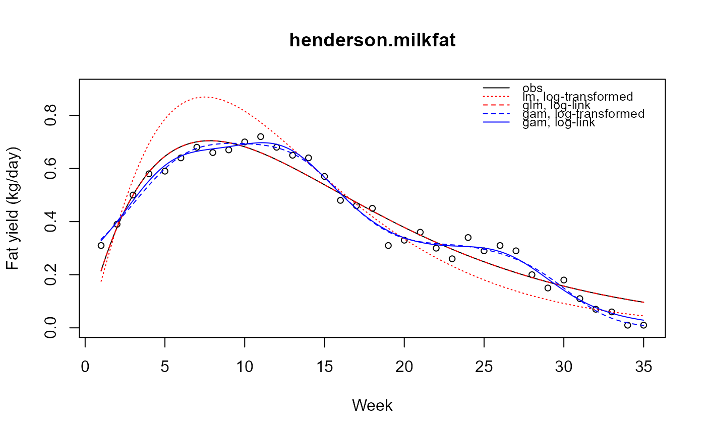

henderson.milkfat.RdAverage daily fat yields (kg/day) from milk from a single cow for each of 35 weeks.
A data frame with 35 observations on the following 2 variables.
weekweek, numeric
yieldyield, kg/day
Charles McCulloch. Workshop on Generalized Linear Mixed Models.
Used with permission of Charles McCulloch and Harold Henderson.
None.
# \dontrun{ library(agridat) data(henderson.milkfat) dat <- henderson.milkfat plot(yield~week, data=dat, cex = 0.8, ylim=c(0,.9), main="henderson.milkfat", xlab = "Week", ylab = "Fat yield (kg/day)")# Yield ~ a * t^b * exp(g*t) # where t is time m1 <- nls(yield ~ alpha * week^beta * exp(gamma * week), data=dat, start=list(alpha=.1, beta=.1, gamma=.1)) # Or, take logs and fit a linear model # log(yield) ~ log(alpha) + beta*log(t) + gamma*t m2 <- lm(log(yield) ~ 1 + log(week) + week, dat) # Or, use glm and a link to do the transform m3 <- glm(yield ~ 1 + log(week) + week, quasi(link = "log"), dat) # Note: m2 has E[log(y)] = log(alpha) + beta*log(t) + gamma*t # and m3 has log(E[y]) = log(alpha) + beta*log(t) + gamma*t # Generalized additive models libs("mgcv")#>#> #>#> #> #>m4 <- gam(log(yield) ~ s(week), gaussian, dat) m5 <- gam(yield ~ s(week), quasi(link = "log"), dat) # Model predictions pdat <- data.frame(week = seq(1, 35, by = 0.1)) pdat <- transform(pdat, p1 = predict(m1, pdat), p2 = exp(predict(m2, pdat)), # back transform p3 = predict(m3, pdat, type="resp"), # response scale p4 = exp(predict(m4, pdat)), p5 = predict(m5, pdat, type="response")) # Compare fits with(pdat, { lines(week, p1) lines(week, p2, col = "red", lty="dotted") lines(week, p3, col = "red", lty="dashed") lines(week, p4, col = "blue", lty = "dashed") lines(week, p5, col = "blue") })legend("topright", c("obs", "lm, log-transformed", "glm, log-link", "gam, log-transformed", "gam, log-link"), lty = c("solid", "dotted", "dashed", "dashed", "solid"), col = c("black", "red", "red", "blue", "blue"), cex = 0.8, bty = "n")# }